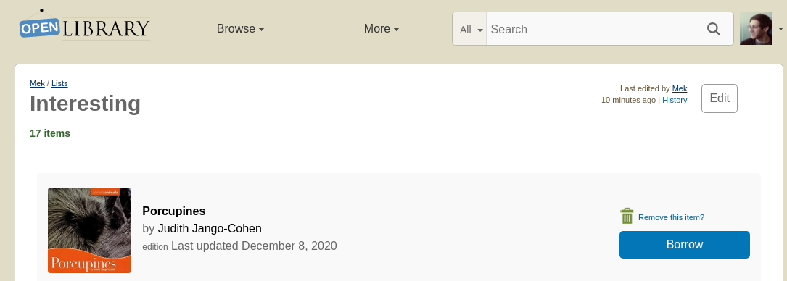

Organize your Books with Lists & the Reading Log
Open Library lets you keep an inventory of books you find interesting
Reading Log
Add a book to your Reading Log
You can use your Reading Log to track books that you're currently reading, that you've already read, or that you want to read.

Remove a book from your Reading Log
A video tutorial is available here:

List
You can also create Lists to Organize books on custom themes or topics.
Creating new List
A video tutorial is available here:
In order to create a new list, you'll first have to find a book or author you'd like to be on the list. Let's assume you'd like to create a new list about Animal Books, starting with this book aboutPorcupines:
https://openlibrary.org/works/OL1989014W/PorcupinesNext, locate the green "Want to Read" button on the left side of the page, underneath the book cover.
Click the download facing triangle to open the options menu.
Next click "Create a new list". You will get dialog box asking for a list name and description andonce you fill that in and click the "Create new list" button you have both created the list ANDadded the book to the list. In the future that list will be available under the Add to List menu.
Adding books to your List
Next, locate the green "Want to Read" button on the left side of the page, underneath the book cover.
.png)
Click the downward facing triangle to open the options menu.
Upon success, you should see an indicator below the Want to Read button that the book has been added to the list:
You can click on the title of this indicator to see all the books in the list.
Pro tip: If you select the "Use this work" checkbox, the work rather than the edition will be added to your list.
View your Reading Log & Lists
You can visit https://openlibrary.org/account/books to view and manage all the books in your Reading Log and your Lists.
History
Created September 13, 2021 • 9 revision| May 18, 2023 | Edited by AgentSapphire | Edited without comment. |
| May 18, 2023 | Edited by AgentSapphire | add link to video tutorial. |
| May 17, 2023 | Edited by AgentSapphire | remove embedded video. |
| May 17, 2023 | Edited by AgentSapphire | add video. |
| September 13, 2021 | Created by Drini | Copy to en page. |